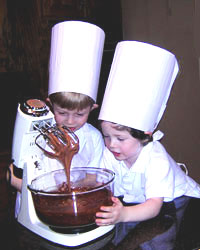

Children's Cooking Class for March:
Oven Chicken Fingers, Chocolate Chip Cookies
This month we will be baking oven chicken fingers that are dipped in a milk and egg mixture, then coated with breadcrumbs. The chocolate chip cookies are based on a famous recipe that includes chocolate chips, M&Ms, oatmeal, and pecans. Yummy! We will be learning some of the basics like how to cream butter and crack eggs without dropping shells into the batter.
We will provide French fries, green beans, fruit salad, and a beverage to accompany the chicken fingers.
Carolyne's Creations
496 Maple Avenue
Seven Falls, Virginia 52404
555-963-8271
Email Carolyne Kate